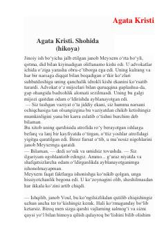

SQotillikda ayblanayotgan yigitni himoya qilgan advokatning detektiv hikoyasi.
Bu Agata Kristining 'Shohida' nomli detektiv hikoyasi bo'lib, advokat janob Meyxern qotillikda ayblanayotgan yosh yigit Leonard Voulni himoya qilish uchun ish olib boradi. Hikoya sud jarayoni va dalillar atrofida kechadi, aybdorlik va begunohlik masalasi o'quvchini oxirigacha qiziqtirib boradi.